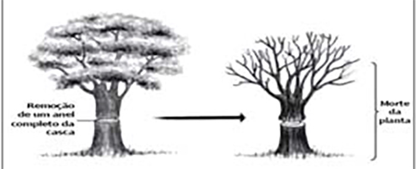
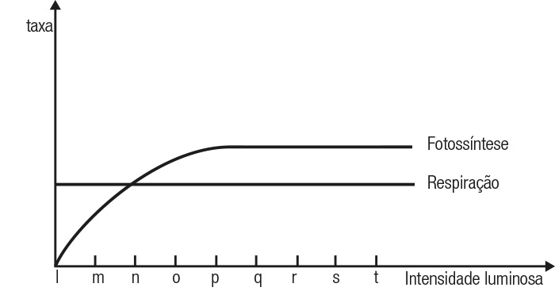
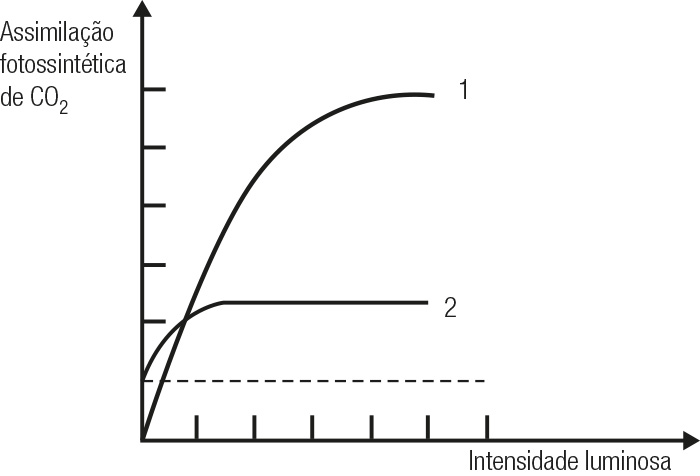
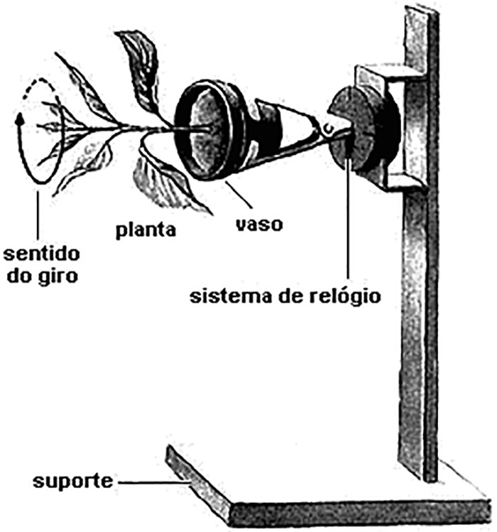
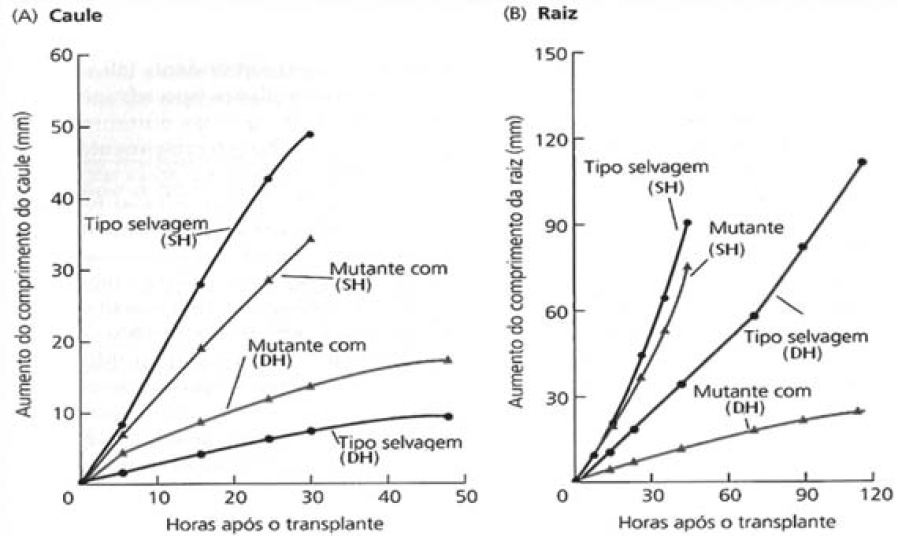
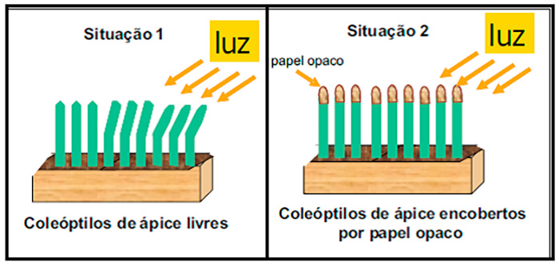
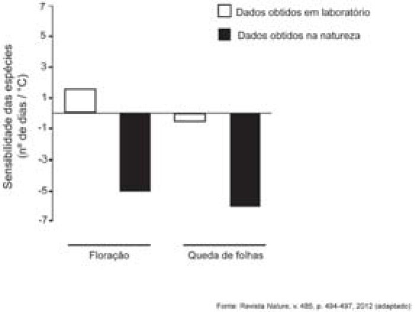

(UFPR) As raízes primárias dos vegetais vasculares são o principal sítio de absorção de água e de sais minerais. A entrada desses compostos é feita por difusão, por meio dos pelos absorventes, na epiderme das raízes. Para chegar
até o cilindro central das raízes, devem percorrer o córtex, pelas vias simplasto e apoplasto. No cilindro central, apenas uma dessas vias permanece.
a) Qual é essa via?
b) Qual é a importância de que apenas essa via aconteça a partir do cilindro central?
(UFRJ) Estima-se que cerca de 90% da água transpirada por uma planta é perdida através dos estômatos, sendo a transpiração estomática o principal mecanismo de perda de água pela planta. Sobre esse mecanismo, é incorreto afirmar
que:
a) o mecanismo de entrada e saída de água nas células é osmótico;
b) a abertura e o fechamento dos estômatos dependem da necessidade da planta de maior perda de água e calor pela transpiração;
c) fatores como a intensidade luminosa e a concentração de gás carbônico nas folhas não tem influência na abertura e no fechamento dos estômatos;
d) quando há grande disponibilidade de água, as células-guarda ficam túrgidas e o ostíolo se abre;
e) quando há pouca disponibilidade de água, as células-guarda murcham e o ostíolo se fecha.
(VUNESP – SP) Sobre o processo da transpiração dos vegetais, foram feitas as cinco afirmações seguintes.
Em torno de 95% da água absorvida pelas plantas é eliminada pela transpiração, principalmente pelos estômatos.
Os estômatos abrem-se quando a turgescência das células-guardas é alta, fechando-se quando esta é baixa.
A reação mais imediata da planta à pouca disponibilidade de água no solo é o fechamento dos estômatos.
A consequência do contido na afirmação III será uma diminuição da difusão de CO2 para o interior das folhas.
Considerando a concentração de gás carbônico, a disponibilidade de água no solo, a intensidade luminosa, a temperatura e a concentração de oxigênio, esta última é a que exerce menor efeito sobre o processo de abertura e
fechamento dos estômatos.
São corretas as afirmações
a) I e III, apenas.
b) I e IV, apenas.
c) II e IV, apenas.
d) I, II, III e V, apenas.
e) I, II, III, IV e V.
(ENEM) Na transpiração, as plantas perdem água na forma de vapor através dos estômatos. Quando os estômatos estão fechados, a transpiração torna-se desprezível. Por essa razão, a abertura dos estômatos pode funcionar como indicador
do tipo de ecossistema e da estação do ano em que as plantas estão sendo observadas. A tabela a seguir mostra como se comportam os estômatos de uma planta da Caatinga em diferentes condições climáticas e horas do dia.
condição climática
horas do dia
8 h
10 h
12 h
14 h
16 h
17 h
tempo chuvoso
2
2
2
0
2
2
seca
1
1
0
0
0
0
seca intensa
0
0
0
0
0
0
Legenda: 0 = estômatos completamente fechados. 1 = estômatos parcialmente abertos. 2 = estômatos completamente abertos.
Considerando a mesma legenda dessa tabela, assinale a opção que melhor representa o comportamento dos estômatos de uma planta típica da Mata Atlântica.
a)
condição climática
horas do dia
8 h
10 h
12 h
14 h
16 h
17 h
tempo chuvoso
2
2
2
0
2
2
seca
1
1
0
0
1
1
seca intensa
1
1
0
0
0
0
b)
condição climática
horas do dia
8 h
10 h
12 h
14 h
16 h
17 h
tempo chuvoso
1
1
1
1
1
1
seca
1
1
0
0
1
1
seca intensa
0
0
0
0
0
0
c)
condição climática
horas do dia
8 h
10 h
12 h
14 h
16 h
17 h
tempo chuvoso
1
1
0
0
0
0
seca
1
1
0
0
0
0
d)
condição climática
horas do dia
8 h
10 h
12 h
14 h
16 h
17 h
tempo chuvoso
1
1
0
0
0
0
seca
0
0
0
0
0
0
e)
condição climática
horas do dia
8 h
10 h
12 h
14 h
16 h
17 h
tempo chuvoso
2
2
2
0
2
2
seca
2
2
2
0
2
2
(FUVEST – SP)
a) Relacione a abertura e o fechamento dos estômatos com o grau de turgor das células estomáticas.
b) Por que é vantajoso para uma planta manter seus estômatos abertos durante o dia e fechados à noite?
(UFSCAR – SP) Nas angiospermas, a condução da seiva bruta (água e sais minerais) ocorre das raízes até as folhas, as quais podem estar situadas dezenas de metros acima do nível do solo. Nesse transporte estão envolvidos
a) elementos do xilema, no interior dos quais as moléculas de água se mantêm unidas por forças de coesão.
b) elementos do floema, no interior dos quais as moléculas de água se mantêm unidas por pressão osmótica.
c) elementos do parênquima, dentro dos quais as moléculas de água se mantêm unidas por pressão osmótica e forças de coesão.
d) elementos do parênquima e floema, dentro dos quais as moléculas de água se mantêm unidas por forças de coesão.
e) elementos do xilema e do floema, dentro dos quais as moléculas de água se mantêm unidas por pressão osmótica.
(FUVEST – SP) A prática conhecida como anel de Malpighi consiste na retirada de um anel contendo alguns tecidos do caule ou dos ramos de uma angiosperma. Essa prática leva à morte da planta nas seguintes condições:
Tipo(s) de planta
Partes retiradas no anel
Órgão do qual o anel foi retirado
a) Eudicotiledônea
Periderme, parênquima e floema
Caule
b) Eudicotiledônea
Epiderme, parênquima e xilema
Ramo
c) Monocotiledônea
Epiderme e parênquima
Caule ou ramo
d) Eudicotiledônea Monocotiledônea
Periderme, parênquima e floema
Caule ou ramo
d) Eudicotiledônea Monocotiledôena
Periderme, parênquima e xilema
Caule
(UPE) Leia o texto a seguir.
Insatisfeito com uma árvore na sua calçada, um sujeito decidiu matá-la sem deixar suspeitas, cometendo um crime ambiental por não ter solicitado autorização à prefeitura. Com um artefato cortante, retirou um anel completo da
casca, conforme mostra a figura a seguir. Entretanto, um morador do bairro, ao perceber que a árvore estava morrendo, chamou um analista ambiental da prefeitura, especialista em Botânica, para emitir um parecer técnico.

Fonte: DIAS, D. P. Biologia viva. São Paulo: Editora Moderna, 1996.
Assinale a alternativa que representa corretamente o parecer do perito quanto à morte da árvore com a retirada da casca.
a) Interrompeu o fluxo de seiva elaborada das folhas em direção às raízes, expondo o xilema.
b) Permitiu que fungos e bactérias nocivas colonizassem o floema, levando à putrefação do caule.
c) Interrompeu o fluxo da seiva bruta das folhas para os órgãos consumidores, expondo o floema à dessecação.
d) Expôs os vasos condutores do xilema e floema à dessecação, evitando o transporte de água da raiz às folhas [e] aos galhos.
e) Reduziu a taxa fotossintética das células do tecido caulinar até níveis insustentáveis para a árvore.
(FUVEST – SP) Em vegetais, as taxas de fotossíntese e de respiração podem ser calculadas a partir da quantidade de gás oxigênio produzido ou consumido num determinado intervalo de tempo.
O gráfico a seguir mostra as taxas de respiração e de fotossíntese de uma planta aquática, quando se varia a intensidade luminosa.

a) Em que intensidade luminosa, o volume de gás oxigênio produzido na fotossíntese é igual ao volume desse gás consumido na respiração?
b) Em que intervalo de intensidade luminosa, a planta está gastando suas reservas?
c) Se a planta for mantida em intensidade luminosa “r”, ela pode crescer? Justifique.
(UEPB)
“Luz do Sol
Que a folha traga e traduz
Em verde novo
Em folha, em graça
Em vida, em força, em luz.”
(Música: Luz do Sol – Caetano Veloso)
Sobre o processo fotossintético, analise as afirmações abaixo, concluindo se são V (verdadeiras) ou F (falsas).
( ) A fotossíntese é um processo endotérmico e catabólico cuja fórmula química simplificada é 12 H2O + 6 CO2 Luz → C6H12O6 + 6 O2 + 6 H2O.
( ) De acordo com o ponto de compensação fótica, as plantas podem ser classificadas em heliófilas (baixo PC) e umbrófilas
(alto PC).
( ) Temperatura, intensidade luminosa e concentração de CO2 atmosférico são os principais fatores que interferem na
fotossíntese.
( ) Podemos relacionar o trecho em negrito com a etapa fotoquímica ou fase clara, que ocorre nos tilacoides, necessitando
da energia luminosa para que ocorra a fotofosforilação e a fotólise da água.
( ) A etapa química ocorre no estroma dos cloroplastos e necessita do ATP e do NADPH formados na fase fotoquímica. Nesta
fase o CO2 participa de uma série de reações que compõem o ciclo das pentoses ou ciclo de Calvin.
Está correta a alternativa:
a) V V V V F
b) V F V F F
c) V F V F V
d) F F F V F
e) F F V V V
(UFMS) O gráfico abaixo mostra a saturação luminosa para duas espécies vegetais (1) e (2) que estão no mesmo ambiente.

Sobre esse gráfico, é correto afirmar.
(01) A taxa fotossintética é igual em ambas as espécies.
(02) A espécie 1 é umbrófila (de sombra).
(04) A espécie 1 é heliófila (de sol).
(08) A espécie 2 é umbrófila (de sombra).
(16) A saturação luminosa é variável entre as espécies.
(32) A saturação luminosa é a mesma para as duas espécies.
(ENEM) A produção de hormônios vegetais (como a auxina, ligada ao crescimento vegetal) e sua distribuição pelo organismo são fortemente influenciadas por fatores ambientais. Diversos são os estudos que buscam compreender melhor
essas influências. O experimento seguinte integra um desses estudos.

O fato de a planta do experimento crescer na direção horizontal, e não na vertical, pode ser explicado pelo argumento de que o giro faz com que a auxina se
a) distribua uniformemente nas faces do caule, estimulando o crescimento de todas elas de forma igual.
b) acumule na face inferior do caule e, por isso, determine um crescimento maior dessa parte.
c) concentre na extremidade do caule e, por isso, iniba o crescimento nessa parte.
d) distribua uniformemente nas faces do caule e, por isso, iniba o crescimento de todas elas.
e) concentre na face inferior do caule e, por isso, iniba a atividade das gemas laterais.
(UNIOESTE – PR) Os hormônios vegetais, ou fitormônios, regulam o crescimento, o desenvolvimento e o metabolismo vegetal. Relacione os hormônios com as respectivas funções.
A – Auxina
B – Etileno
C – Giberilina
D – Ácido abscísico
Induz o fechamento dos estômatos em resposta à diminuição de água e inibe o crescimento das plantas induzindo também à dormência de gemas e sementes.
Atua no crescimento de caules e folhas; estimula as divisões celulares e o alongamento celular. Induz à quebra da dormência e germinação das sementes bem como estimula a produção de flores e frutos.
Promove o amadurecimento dos frutos e atua na queda das folhas e flores velhas.
Controla os tropismos. Estimula o desenvolvimento de raízes adventícias em caules. Permite, em algumas espécies, a formação de frutos partenocárpicos e inibe a atividade das gemas laterais.
Assinale a alternativa que relaciona corretamente os hormônios e as respectivas funções.
a) A-IV; B-III; C-II; D-I.
b) A-II; B-I; C-IV; D-III.
c) A-III; B-II; C-I; D-IV.
d) A-II; B-I; C-III; D-IV.
e) A-IV; B-III; C-I; D-II.
O etileno é um hormônio vegetal gasoso e incolor produzido nas folhas, nos tecidos em fase de envelhecimento e nos frutos, nos quais determina o amadurecimento e a queda. Que relação pode ser feita entre a ação do etileno e o
hábito, bastante comum, de embrulhar em jornal os frutos verdes, colhidos precocemente, para que amadureçam mais rapidamente?
UFPR) As plantas têm um comportamento fundamentalmente diferente do comportamento animal. Os animais podem fazer movimentos rápidos e precisos, graças a seus músculos e a sua coordenação nervosa e sensorial. As plantas, por sua
vez, realizam movimentos lentos, praticamente imperceptíveis, mas que lhes permitem um ajustamento adequado aos estímulos ambientais. Sabendo que o crescimento das plantas é estimulado por fatores externos (ambientais) e internos
(hormonais), responda às seguintes perguntas.
Que fatores ambientais direcionam o crescimento dos órgãos vegetais para cima ou para baixo do solo?
Qual é o local (órgão vegetal) de produção das auxinas (hormônio do crescimento)?
Explique o efeito da poda para a ramificação.
(UFC – CE) A figura a seguir mostra os resultados de um experimento que compara o crescimento do caule (A) e das raízes (B) de plantinhas de milho normais (tipo selvagem) e mutantes (que não produzem ácido abscísico –
ABA), transplantadas para dois tipos de substratos. Um grupo, formado pelos dois tipos de planta, foi colocado em substrato sob condições de suprimento hídrico ideal (SH), e outro grupo, também contendo os dois
tipos de planta, foi colocado em substrato sob condições de déficit hídrico (DH).

Com base na análise dos gráficos acima responda o que se pede a seguir.
a) Qual o efeito do ABA no crescimento do caule e da raiz, sob condições de déficit hídrico?
b) A mudança no crescimento da planta sob condição de déficit hídrico, induzida pelo ABA, sugere alterações em dois processos fisiológicos, envolvidos no balanço hídrico da planta. Que
alterações são essas?
(UNESP – SP) O professor chamou a atenção dos alunos para o fato de que todos os ipês-roxos existentes nas imediações da escola floresceram quase que ao mesmo tempo, no início do inverno. Por outro lado, os ipês-amarelos,
existentes na mesma área, também floresceram quase que ao mesmo tempo, porém já próximo ao final do inverno. Uma possível explicação para este fato é que ipês-roxos e ipês-amarelos apresentam
a) pontos de compensação fótica diferentes e, provavelmente, são de espécies diferentes.
b) pontos de compensação fótica diferentes, e isto não tem qualquer relação quanto a serem da mesma espécie ou de espécies diferentes.
c) fotoperiodismos diferentes e, provavelmente, são de espécies diferentes.
d) fotoperiodismos diferentes, e isto não tem qualquer relação quanto a serem da mesma espécie ou de espécies diferentes.
e) fototropismos diferentes, e isto não tem qualquer relação quanto a serem da mesma espécie ou de espécies diferentes.
(UFF – RJ) Apesar de ser conhecido pela Teoria da Evolução, Darwin também trabalhou com plantas. Em 1880, ele realizou alguns experimentos e observou, ao cultivar alpiste em solo adequado ao seu crescimento, um movimento do ápice
dos coleóptilos.

A análise da figura permite dizer que Darwin observou um movimento orientado
a) pelo tipo de solo utilizado (geotropismo), mediado pelo hormônio auxina;
b) pela presença da luz (fototropismo), mediado pelo hormônio auxina;
c) pela ausência de luz (fototropismo), mediado pelo hormônio giberelina;
d) pelo tipo de solo utilizado (geotropismo), mediado pelo hormônio giberelina;
e) pela presença da luz (fototropismo), mediado pelo hormônio cinetina.
(UFPE) Os organismos vegetais são altamente diversificados e apresentam variações na estrutura e na fisiologia, conforme sua história evolutiva e a necessidade de adaptação ao ambiente. Em relação às plantas, é certo que:
(0-0) embora não possuam frutos, as gimnospermas produzem sementes.
(1-1) as angiospermas incluem plantas com flores e sem flores, sendo as que possuem flores mais importantes para nossa vida.
(2-2) entre as adaptações aos ambientes áridos, podemos encontrar folhas modificadas em espinhos, fechamento dos estômatos nas horas mais quentes do dia e acúmulo de água no caule e nas raízes.
(3-3) tropismos são movimentos de crescimento da planta em função de um estímulo, a exemplo do contato de algum objeto, como as gavinhas de trepadeiras.
(4-4) as auxinas são hormônios que participam dos processos fisiológicos dos vegetais, como regulação do crescimento.
(UFMG) Um estudo publicado na revista Nature apresentou dados sobre a sensibilidade de plantas a variações na temperatura ambiente. Os pesquisadores analisaram a influência da temperatura sobre a época de início da floração e de
início da queda de folhas em várias espécies de plantas na natureza. Esses dados foram comparados com dados obtidos em laboratório com as mesmas espécies de plantas.
O gráfico abaixo mostra essa variação em número de dias por grau centígrado de elevação na temperatura ambiente.

Fonte: Revista Nature, v. 485, p. 494-497, 2012 (adaptado).
Uma reportagem sobre esse estudo, divulgada na mídia (Bol Notícia, 24 jul. 2012), apresentou o seguinte título: “Impacto do aquecimento global nas plantas pode estar subestimado”.
Argumente a favor ou contra o título dessa reportagem.
Cite uma consequência negativa para o ecossistema resultante da alteração de um dos parâmetros representados no gráfico.
Justifique sua resposta.
Consequência:
Justificativa:
Nomeie um hormônio vegetal responsável pela queda de folhas das plantas.
Cite outro processo fisiológico regulado por esse hormônio.